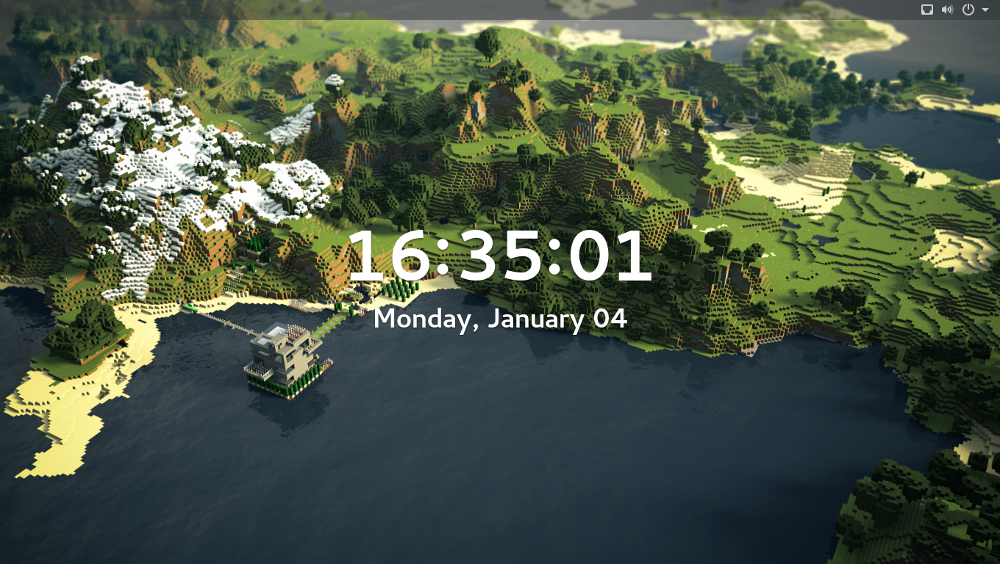
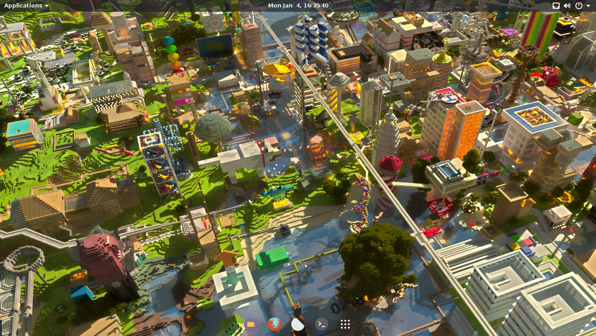
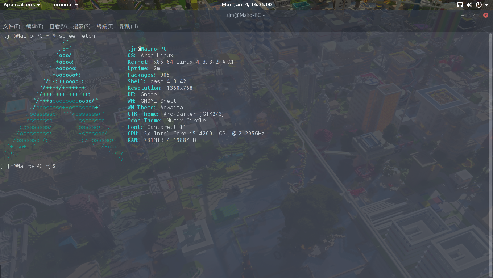
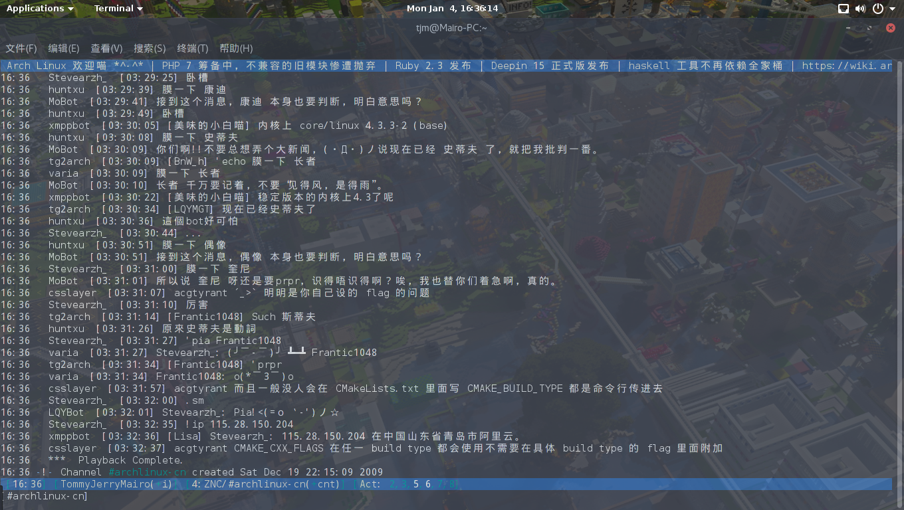
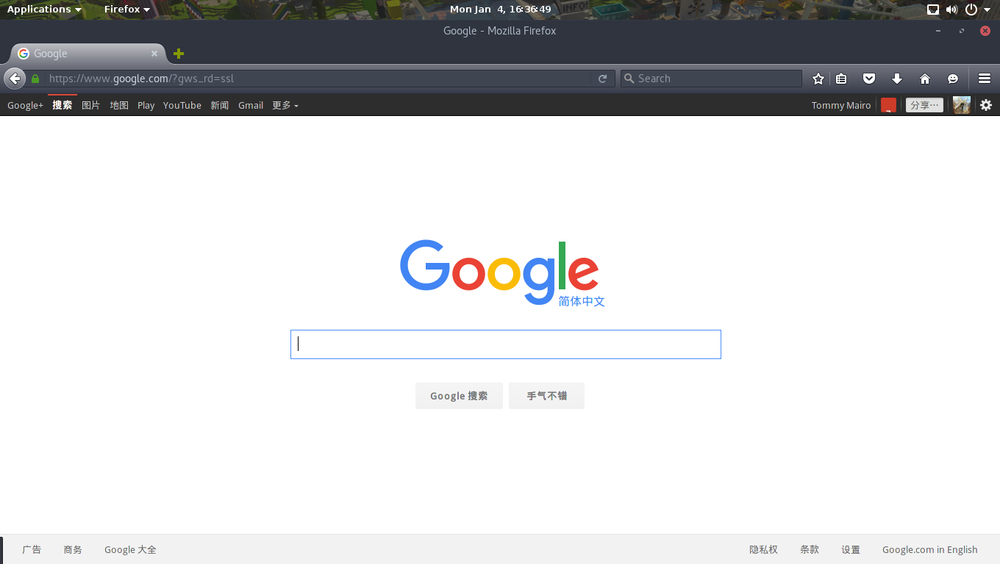
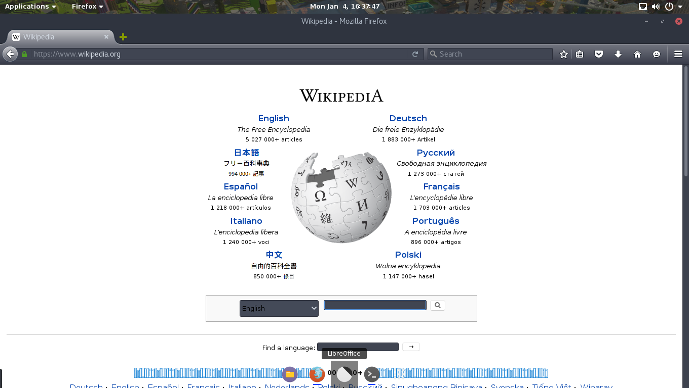
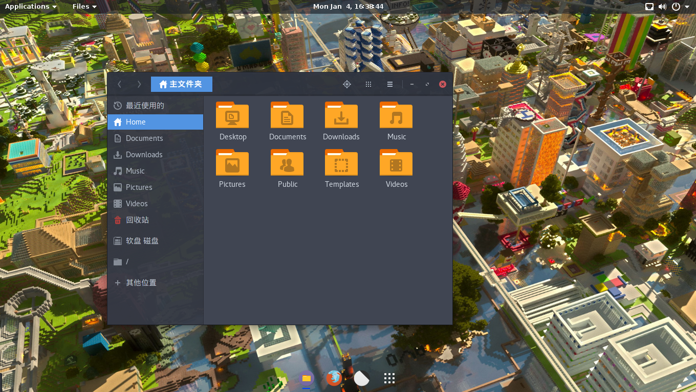

Hi, I am a computer science student, who is interested in archlinux, python programing, as well as network programing. My pgp key-ID is D73BDD56, so you can connect to me with enough privacy
As an ArchLinux User
I have made a specific OS using archlinux for my self. And I am glad to share it with you.
My screen lock.  My desktop.  The screenfetch.  Using irssi to talk on IRC.  Using firefox.   File folder. 
In that I have no time to build my own vimrc, I will not show you my vim :D
How to connect to me?
My email address is tommy.mairo@gmail.com.
And also you can find me on IRC at freenode.net. My nick is TommyJerryMairo and I have a znc , so you can use MemoServ to leave me a message or just send me a private message. The znc will show all the playback messages when I am able to connect to it.
At freenode, I always join channel #archlinux-cn #linuxba ##Orz #c_lang_cn , which means that you can simply join the channel and talk with me. I will be very happy to see you.
Why no more?
Because I have to deal with my TOEFL study these days, I cannot continue to buid my blog. So, more beauty is comming soon, waiting worthwile.